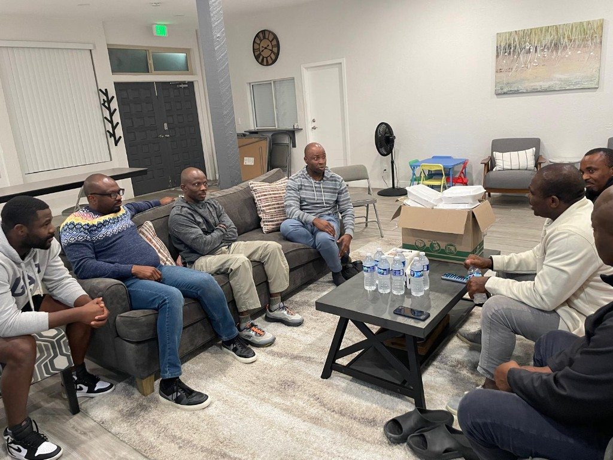
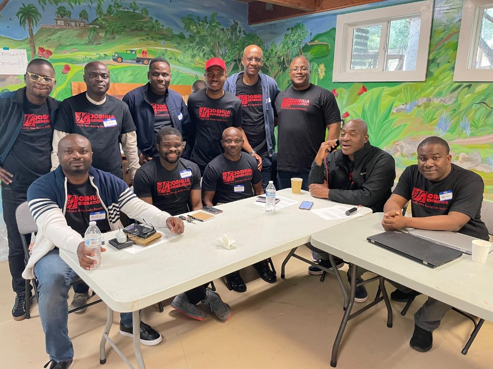

About our Cooperative
Assurance Investment and Cooperative Inc. (AIC) is a member-owned Cooperative society that aims to provide financial independence and mutual support to its members through regular financial contributions, lending to members, and other risk-adjusted short, medium, and long-term investments.
The gain from the Cooperative's loan and investment portfolio is distributed back to members based on their contributions.
AIC’s short-term goal is to start providing members with attractive access to short term borrowing by lending money to its members.
Assurance Investment and Cooperative Inc. is a member-owned Cooperative society dedicated to promoting financial independence and mutual support for its members through regular financial contributions and investment.
We help members access capital with lower or minimal interest rate compared to banks and other financial institutions.
Assurance Investment and Cooperative Inc. is a Cooperative society that will benefit its members by providing access to passive income through investments in real estate.
Membership is open to both men and women, although the Cooperative will initially focus on recruiting men.
Members are required to attend meetings and commit financially to the Cooperative.

Membership in Assurance Investment and Cooperative Inc. is open to all, although the Cooperative will concentrate on recruiting men initially. Members are required to attend meetings and commit financially to the Cooperative.
An upfront intake deposit amount of $100 is required, and members are expected to make a minimum monthly payment of $50. Payments can be made in installments of $50, $100, $200, $300, $400, $500, or any amount not more than $3000 per month.
Members of the Cooperative are expected to:

AIC’s immediate goal is to invest contributions in a Real Estate Investment Trust (REIT) that will provide members with passive income.
The Cooperative will seek to invest in high-yielding REITs that will provide members with regular income.
After at least 6 months of contributing membership, members qualify to borrow money from the Cooperative. The total amount a member can borrow will be a maximum of the total amount contributed by the member and the total contributions of any two chosen member guarantors selected by the borrower.
A fixed monthly repayment plan will be provided to the member to strictly adhere to, for all approved loans. The Cooperative will also aim to establish relationships with local credit unions and banks to provide members with access to additional funding.
AIC aims to purchase property for resale in the future, subject to members collective approval. This is expected to generate income for the Cooperative, which will be distributed among members based on their contributions. AIC will work with local real estate agents to identify potential properties for purchase, with a focus on properties that have the potential for high returns. (Interest rate will typically be 40% lower than current market rates)
Make bulk purchases of household / food stuff for members. Members contributions can be used to defray cost to each member
Look at investments such as Turo to explore how our money can be making passive income for the Cooperative.
Over the long term, AIC aims to expand its operations to include a wider range of investment options, including stocks,S & P 500, bonds, and other financial instruments. AIC will also seek to establish partnerships with other Cooperatives and financial institutions to provide members with additional resources and opportunities.
Access of members to emergency loans from the Cooperative for real estate transactions
Assurance Investment and Cooperative Inc. (AIC) will market its services through the following strategies:
Assurance Investment and Cooperative Inc. will generate publicity for its services through the following strategies:
Joining Assurance Investment and Cooperative inc. provides several benefits to individuals. Here are some of the benefits:
Assurance Investment and Cooperative Inc. will generate revenue through regular contributions from its members and income generated by investments in real estate and other activities. The Cooperative will keep overhead costs low by operating on a volunteer basis and leveraging technology to automate administrative tasks.
To enable us achieve our goals, we shall adopt the following:
Assurance Investment and Cooperative Inc. is a member-owned Cooperative society that aims to provide financial independence and mutual support to its members through regular financial contributions and investment in real estate.
The Cooperative's immediate goal is to invest contributions in a high-yielding Real Estate Investment Trust (REIT), while its short-term goal is to start lending money to members. The one-year plan is to purchase a property for resale.
The Cooperative will work with local real estate agents and financial institutions to provide members with access to additional funding and investment opportunities.
Gbanju Aruwayo-Obe
President (570-216-0844)
Taiwo Embassey
Vice President (619-312-8677)
Yinka Daramola
Secretary (619-482-2722)
Kelvin Amede
Assistant Treasurer (619-948-6040)
Ready to review how we are governed?
Read our Bylaws